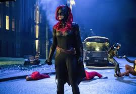
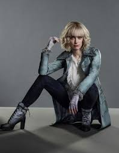
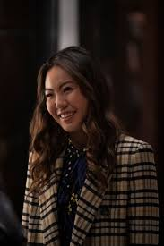
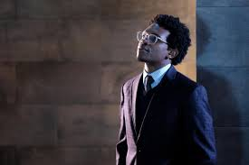
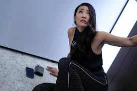
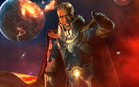

Batwoman Season Recaps
Season 1
Three years after billionaire philanthropist Bruce Wayne and his vigilante alter-ego Batman disappeared, his cousin Kate Kane sets out to overcome her demons and become a symbol of hope by protecting the streets of Gotham City as Batwoman.
Characters:
Kate Kane/Batwoman

Beth Kane/Alice

Mary Hamilton

Luke Fox

Cathrine Hamilton Kane

Jacob Kane
The Monitor
